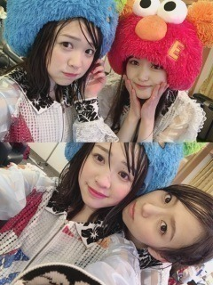

2017/0110Tue足跡
成人を迎えられた皆様おめでとうございます。
『乃木坂46 SPECIAL LIVE 2017 at UNIVERSAL STUDIOS JAPAN®』
無事終了しました
寒い中お越し下さった皆様、
ありがとうございました。
飛鳥ちゃんが体調不良で欠席のため
私が急遽出る事になり、皆様には
悲しい思いをさせてしまいました。
本当にすみませんでした
それでも私の推しタオルやうちわなど
掲げて下さったりと、凄く嬉しかったです。
1日目は雨に気温も低く、
寒さで体全体が凍ってしまったのでは
ないかと言うくらい固まりました。笑
それでも負けじとファンの皆様のコールや
声援のおかげで最後までパフォーマンス
する事が出来ました
寒い中、ありがとうございました
風邪は引いてないですか？
お風呂や温かい飲み物などで
ゆっくり身体を温めてくださいね。
2日目は無事晴れ！楽しかった〜
キャラクターのみんなと一緒に
おいでシャンプーは貴重すぎました。
最後に紙吹雪が大量に降って来て
みり愛が見えなくなる事件発生
しましたが、顔に紙吹雪が大量に
かかってきた時のは今でも忘れません
あの場に立たせていただいたのは
私にとって本当にいい経験となりました

雨と風でメイクも髪の毛もぐしゃぐしゃ
終わった後にはメンバーみんなと
アトラクションに乗ったり
買い物したり、充実できました
アトラクションで写真も
撮ったのですがそれがみんな
かわいくて面白い。笑
普段出さないくらい大きな声で
叫んだりふざけたり、、
とっても楽しかったです(^ ^)
と、言いますとつい数日前にも
堀未央奈とUSJに遊びにきていたのですが。
ハリーポッターは全作見るほどの
ポッタリアンでございまして
スリザリンとハッフルパフ推しです〜
あ、ちなみにドラコマルフォイ推しです
ハッフルパフのローブに
ドラコマルフォイの杖を購入。
はあああああ幸せ〜〜〜
前回の抱負に関するブログのコメントを
読んでいたら、皆様が私の至らぬ点を
指摘せず、言葉を変えて優しく
教えてくれていたのが伝わりました。
自分でも前回のブログを見返すと、
自分はやるだけの事をやりきったのだと、
伝わっても仕方ない様な表現ですね。
自分の中では色々な事を思い返して書いたつもりだったのですが、言葉足らずでした。
現状打破
雑誌のお仕事での活躍の場を広げたい
歌番組に出たい
思っている事の一部ですが、
具体的には今年の抱負をこんな風に
思っています。
・振り返る事も必要
・行動してみて後悔があったとしても、
それは自分のこれからの成長に
繋がる事なので大事なこと
この事は、乃木坂46に入ってから
皆様に教えて頂きました。
そして様々な経験させて貰えた事で
少しずつ身になって来ている様に思います。
イベントに足を運んでくれて、
遠征までしてくれたり、
辛い時にはすぐに察して優しい言葉を
かけてくださったり。
私はどれだけファンの皆様に救われたか、。
皆様をもっと笑顔にできるよう
この願いを少しずつでも近づけられるよう、
私なりに全力で望みたいと思っています
これが今の正直な気持ちです。
話が長くなっしまいごめんなさい。
読んでくださってありがとうございました。
改めて宜しくお願い致します
また見てね
みり愛
2017/01/10 18:00


コメント(777)
ありがとう！！！
ユニバお疲れ様！！
みりあくるってしってたら、いってたのにーー
私も去年の夏、ユニバ行ったよ！
ハリーポッターも行った！！
クオリティ高すぎてすごいよね！！！
ユニバお疲れ様！
体あっためてね(^^)
みり愛が杖買ったらおれも買いたくなっちゃうよ。
ユニバよかったね！！
おれもみりあきてくれてめっちゃ嬉しかったしめっちゃかわいいです笑笑
今年から99年生まれは参政権与えられるね！
自分に自信を持つんじゃあ！！
応援してるよ今年もーーーーー！！！！！！
USJ良いなぁ( ´-` ).｡oO
行ったことない←
京都全握だけ行くね！
USJLIVE2日目見に行ったよ！！
飛鳥の代わりで来て緊張してたと思うけどすごくよかったです！
みり愛の100パーセントの笑顔を見れてほんとに嬉しかったです！
またUSJLIVEしてね！！✨
俺も行きたかったなーー
行けなくてごめんね泣
これからも頑張って！
代役とあってプレッシャーあったかもだけどやり遂げられてよかったね！！
ずっと応援してるよ！！！
みりあのうちわ見つけてくれてるといいな
みりあのダンスは背が大きくないけど存在感があってどこにいてもわかったよ
これからもみりあのこと応援し続けるから
今まで以上の活躍をするまで見ています
みり愛ちゃんとても可愛いです♡
私もハリーポッター好き！
これからも応援してまーす
みり愛に会いに大阪いきたかったぁﾝｱﾞｱﾞｱﾞｱﾞｱﾞｱﾞｱﾞｱﾞ
2日間お疲れ様。特に1日目雨の中大変だったね。
あめに濡れたから風邪引かないようにね。
近いうちに2回もユニバ行けていいな〜
高校受験で握手会行けないけど終わったらみり愛のところ初めて言ってもいいかな？
これからも応援してるね。
USJ既に行ってたのね笑
とまあ、雨の中本当にお疲れ様！
ユニバライブ、場所が悪くて真横からの鑑賞だったんだけど逆にダンスがよく見えたりしてよかった！ほんと寒かったね
着実にステップアップしていこう(´∀｀)
ユニバ楽しかったかな？(当たり前か)
関西のユニバでライブってことは関東の夢の国でもそのうち...？笑
たくさん悩むこともあるだろうし辛いこともあるけど支えていくのは変わらないのでこれからも一緒に坂を登っていこうね(応援しかできないけど)
ユニバのライブ急で大変だったよね。お疲れ様！
今年は去年以上にみり愛が活躍できることを祈っとく！
これからもみり愛のこと応援するし支えるね！
雨の中大変だったと思うけど風邪引いてないかなー？
あったかくね〜〜(*´Д｀*)
755とかでみり愛がユニバ楽しんでるの見たらめっちゃユニバ行きたくなったよー！
行ってきますっ！！笑
自分も歌番組でみり愛見たいっ！
2017年頑張ろー！
ハリーポッターできる前だからまた行きたいな
今年の抱負見ました。
一年の間抱負を掲げてもふと忘れてしまうこともあるけど時々この自分で決めた抱負を見返すことで自分を見つめ直すきっかけにもなると思うよ。
決めたことはやり遂げよう！
そのお手伝いは任せてください
ユニバライブお疲れ様‼︎
雨の中大変だったと思うけど風邪引いてないかなー？
あったかくね〜〜(*´Д｀*)
755とかでみり愛がユニバ楽しんでるの見たらめっちゃユニバ行きたくなったよー！
行ってきますっ！！笑
自分も歌番組でみり愛見たいっ！
2017年頑張ろー！
ユニバライブお疲れ様です！
ファンの中ではいろいろありますが僕はみり愛が来てくれてとても嬉しかったです！
そういう方達の方が多いですし批判は無視してもいいと思います！
これからも頑張ってください！
はやと
みり愛が、可愛いすぎて。･*･:≡( ε:) 笑
今年も、頑張ってね
七瀬や他の選抜メンバーにも負けないくらい、みり愛のダンスかっこよかったよ。本当にお疲れ様
1月24日は自分の誕生日でーす
ユニバおつかれ！成人式で行けなかったけどめちゃくちゃ行きたかった！来年もやるかな？来年もやるなら絶対に行くよ！
みり愛ちゃんのパフォーマンス良かったって聞いたしぼくも嬉しかったよ笑
うん！2017年もがんばろう！みり愛ちゃんが頑張ってる楽しそうにしてるのが好きだよ
見に行くことは出来なかったけどみりあちゃんなりにパフォーマンス出来てたと聞いてます
1日目、遠征したよ。
後ろのブロックだったけど、ちゃーんと見えたよ。
来週の握手会、いきまーす。
シロクマ、三匹、連れていくからね。
可愛がってよー！
楽しみだ♪ 笑
選抜期待してます。
舞台のみり愛にも期待です。
じゃあね。
みりあのパフォーマンス素敵だったし、めっちゃ可愛かったよ！みりあ見れて良かったよー！
てか、最近また可愛くなったよね〜 (^-^) これからのみり愛の成長が楽しみやわ♫
ほなまたね〜( ^_^)/~~~
まずはユニバのライブお疲れ様！
雨の中寒くて大変だったみたいだね。行きたかったー。。
みり愛がファンに救われてるって思うのよりももっとファンのみんなはみり愛から笑顔とか元気を貰ってると思うよ！
胸はって！！
僕も少しでもみり愛の力になりたいなー！
みり愛自身も大変なはずだったのにファンのみんなへの気遣いがあってほんとに優しいね！
いつも元気を貰ってるのでファンとしてもなにか恩返しとかしたいな！これからも応援してるよ！
みり愛の頑張りに僕も元気をもらってます。
１日１日の成長を大切に僕も頑張ります❗
ユニバライブ本当にお疲れ様でした。ゆっくり休んでください
USJなかなか行けないからこういう機会に行けばよかった
コメントする